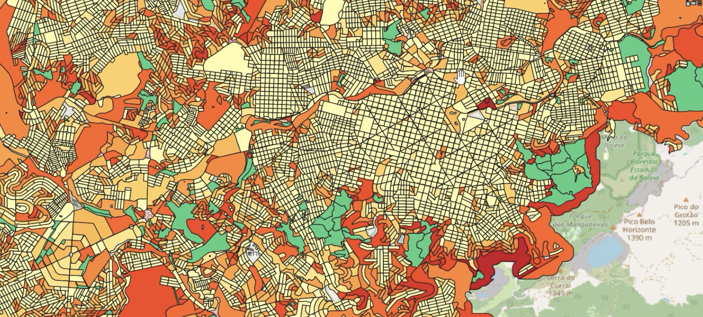
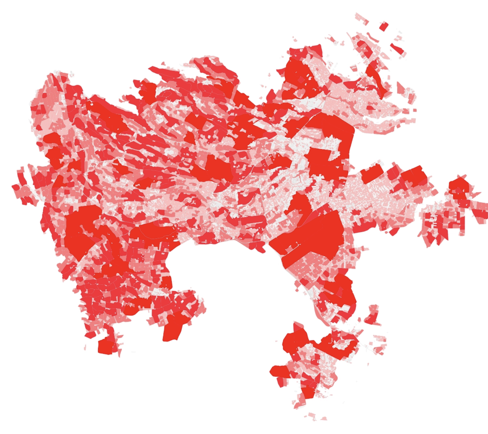
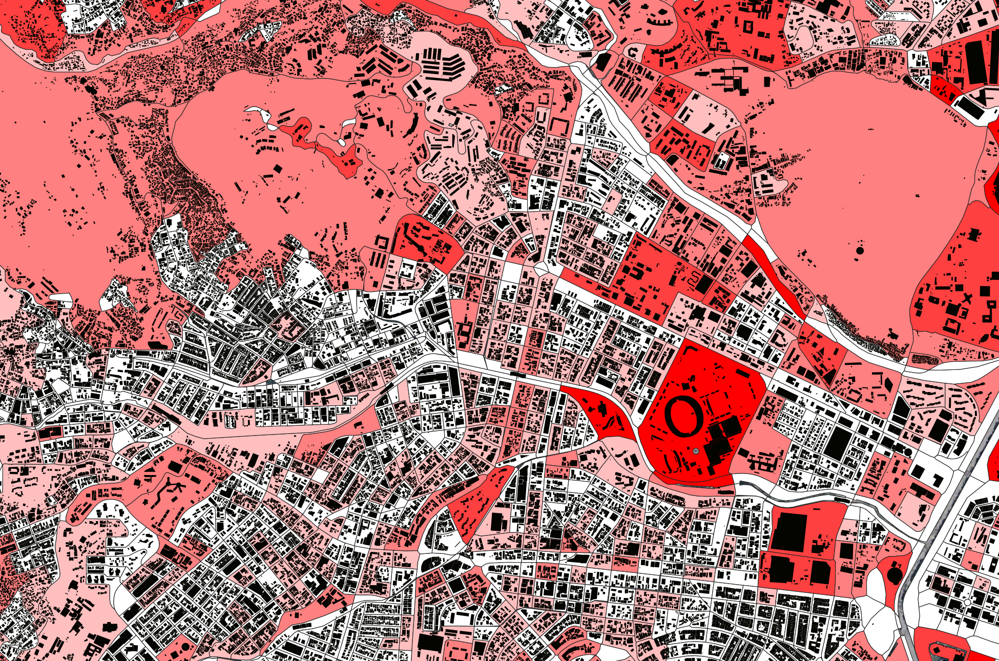

The Urban Regularity Index measures the degree to which urban blocks exhibit morphological characteristics consistent with planned land subdivision, as distinct from informal or incrementally developed areas. The core distinction: areas that were subdivided before they were occupied versus areas where settlement preceded any formal layout of streets and lots. This distinction has direct implications for urban development outcomes. Providing infrastructure in irregular settlements costs three to six times more than in areas where land was subdivided before construction. The index operates at the block level across 1,239 cities in 77 countries in Sub-Saharan Africa and Latin America, producing a continuous score between 0 (irregular) and 1 (subdivision-like) for each of 4.8 million blocks. The approach uses only digitized vector data from OpenStreetMap and Overture Maps, without satellite imagery or computer vision.
El Índice de Regularidad Urbana mide el grado en que las manzanas urbanas exhiben características morfológicas consistentes con la subdivisión planificada del suelo, a diferencia de áreas informales o de desarrollo incremental. La distinción central: áreas subdivididas antes de ser ocupadas versus áreas donde el asentamiento precedió cualquier trazado formal de calles y lotes. Esta distinción tiene implicaciones directas para el desarrollo urbano. Proveer infraestructura en asentamientos irregulares cuesta entre tres y seis veces más que en áreas subdivididas antes de la construcción. El índice opera a nivel de manzana en 1.239 ciudades de 77 países en África Subsahariana y América Latina, produciendo un puntaje continuo entre 0 (irregular) y 1 (subdivisión) para cada una de 4,8 millones de manzanas. El enfoque usa solo datos vectoriales digitalizados de OpenStreetMap y Overture Maps, sin imágenes satelitales ni visión por computador.

The methodology has four stages. First, road and natural-feature networks are used to delineate non-overlapping block polygons within each city's urban extent. Second, 13 block-level morphometric indicators are computed capturing road network structure, building fabric characteristics, and geometric regularity. Third, a calibrated statistical model is trained against a 101-city human-labeled validation set to produce a regularity score. Fourth, a hierarchical cascade classifier assigns blocks into categories: open space, non-residential, subdivision, and irregular settlement. The unit of analysis evolved during the project from fixed grid cells to variable-geometry blocks defined by the road network. Blocks better capture the actual morphological structure because they respect the geometry of the street fabric rather than imposing an arbitrary grid.
La metodología tiene cuatro etapas. Primero, las redes viales y de elementos naturales se usan para delinear polígonos de manzana no superpuestos dentro de la extensión urbana de cada ciudad. Segundo, se calculan 13 indicadores morfométricos a nivel de manzana que capturan la estructura de la red vial, las características del tejido edificado y la regularidad geométrica. Tercero, un modelo estadístico calibrado se entrena contra un conjunto de validación etiquetado por humanos en 101 ciudades. Cuarto, un clasificador en cascada jerárquico asigna las manzanas a categorías: espacio abierto, no residencial, subdivisión y asentamiento irregular.
The first 10 capture regularity (how the area was laid out). The last 3 capture saturation (how densely built it is). The strongest discriminators between subdivisions and irregular settlements are intersection angle deviation (M9), building orientation entropy (M6), and road tortuosity (M8).
Las primeras 10 capturan regularidad (cómo fue trazada el área). Las últimas 3 capturan saturación (qué tan densamente construida está). Los discriminadores más fuertes entre subdivisiones y asentamientos irregulares son la desviación angular de intersecciones (M9), la entropía de orientación de edificios (M6) y la tortuosidad vial (M8).
77.6% of blocks across the 1,239 cities are classified as subdivisions, 17.1% as irregular settlements, 5.2% as open space. The formal/informal subdivision distinction (Stage 4 of the cascade) shows limited discriminatory power (AUC ~0.66), confirming that digitized road geometry alone cannot distinguish surveyed from unsurveyed subdivisions at this resolution. This is a meaningful negative finding. Latin American cities tend to have higher subdivision shares than Sub-Saharan African cities. Among individual cities, the highest subdivision shares are in Mexican border towns and Congolese cities; the lowest in Kenyan, Ugandan, and Malawian cities.
El 77,6% de las manzanas en las 1.239 ciudades se clasifican como subdivisiones, 17,1% como asentamientos irregulares, 5,2% como espacio abierto. La distinción formal/informal (Etapa 4 de la cascada) muestra poder discriminatorio limitado (AUC ~0,66), confirmando que la geometría vial digitalizada por sí sola no puede distinguir subdivisiones levantadas de las no levantadas. Este es un hallazgo negativo significativo. Las ciudades latinoamericanas tienden a tener mayores proporciones de subdivisión que las africanas subsaharianas.

